Consider that a group of criminals was able to rob a bank and got away with a considerable amount of money. However, they were reckless and the security cameras were able to film them. Hence, the police was able to identify everybody in the group.
Suppose that the police has a map defined by 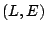,
where  denotes the set of locations (with 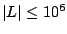)
and 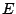 denotes the set of roads connecting those locations
(with
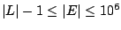). The map is connected, i.e.,
for all pairs of locations 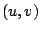 there is always a connecting
path in the map.
Let
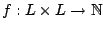 be a function that
defines for every road 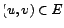 how many police officers
are necessary to make a police road block at road .
Given a set of roads 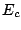, such that
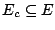, the
value of 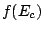 denotes the total number of police officers
necessary to make road blocks in every road 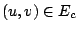.
denotes the set of locations (with 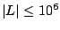)
and 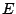 denotes the set of roads connecting those locations
(with
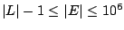). The map is connected, i.e.,
for all pairs of locations 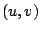 there is always a connecting
path in the map.
Let
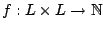 be a function that
defines for every road 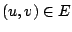 how many police officers
are necessary to make a police road block at road .
Given a set of roads 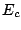, such that
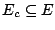, the
value of 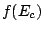 denotes the total number of police officers
necessary to make road blocks in every road 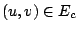.
Since the police know the criminals, they were able to identify a set 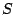 (with 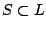) of highly suspicious places where the criminals are probably hiding. The purpose of the criminals is to be able to get into a border location in order to get out of the country. The set 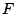 defines the set of border locations such that 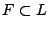 and 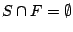. Therefore, the police needs to make road blocks in a set of roads with in order to ensure that the criminals will not be able to move from the suspected locations to the border without using one of the roads with police road blocks.
Your program must determine which is the minimum number of police officers necessary to control a set of roads such that the criminals will not be able to run from the suspected locations to the border.
10 13 1 2 2 1 3 2 2 4 4 2 5 3 3 5 5 3 6 4 4 5 3 4 7 4 5 7 6 6 8 6 7 8 2 7 9 10 8 10 10 2 2 3 2 9 10
14